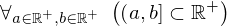
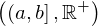
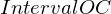

Theorem realsPos_intervalOC_is_subset_of_RealsPos of type Forall¶
from context proveit.number.sets.real¶
see dependencies
In [1]:
import proveit
# Automation is not needed when only building an expression:
proveit.defaults.automation = False # This will speed things up.
proveit.defaults.inline_pngs = False # Makes files smaller.
# import the special expression
from proveit.number.sets.real._theorems_ import realsPos_intervalOC_is_subset_of_RealsPos
In [2]:
# check that the built expression is the same as the stored expression
%check_expr realsPos_intervalOC_is_subset_of_RealsPos
In [3]:
# Show the LaTeX representation of the expression for convenience if you need it.
print(realsPos_intervalOC_is_subset_of_RealsPos.latex())
In [4]:
# display the expression information
realsPos_intervalOC_is_subset_of_RealsPos.exprInfo()
Out[4]:
| core type | sub-expressions | expression | |
|---|---|---|---|
| 0 | Operation | operator: 1 operand: 2 |  |
| 1 | Literal |  | |
| 2 | Lambda | parameters: 14 body: 3 |  |
| 3 | Conditional | value: 4 condition: 5 |  |
| 4 | Operation | operator: 6 operands: 7 |  |
| 5 | Operation | operator: 8 operands: 9 |  |
| 6 | Literal |  | |
| 7 | ExprTuple | 10, 20 |  |
| 8 | Literal |  | |
| 9 | ExprTuple | 11, 12 |  |
| 10 | Operation | operator: 13 operands: 14 |  |
| 11 | Operation | operator: 16 operands: 15 |  |
| 12 | Operation | operator: 16 operands: 17 |  |
| 13 | Literal |  | |
| 14 | ExprTuple | 18, 19 |  |
| 15 | ExprTuple | 18, 20 |  |
| 16 | Literal |  | |
| 17 | ExprTuple | 19, 20 |  |
| 18 | Variable |  | |
| 19 | Variable |  | |
| 20 | Literal |  |